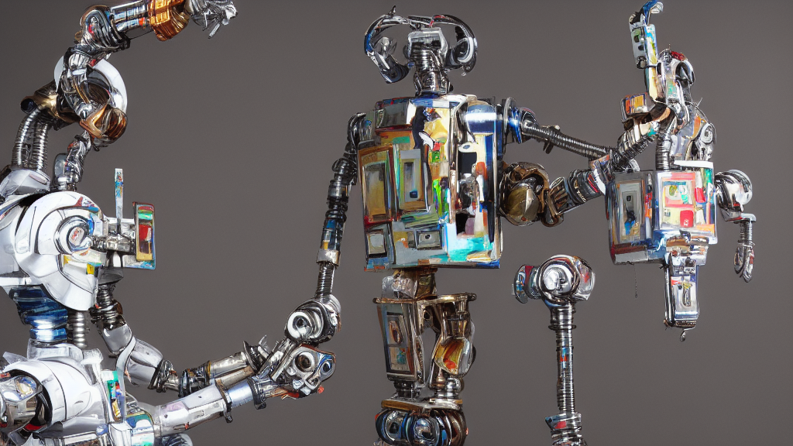

AI Matters To You
AI Matters to You

Everyone keeps talking about AI, but not many actually understand it, and even fewer people explain it well.
We all can relate. You browse the internet and you come across exciting headlines like “AI beats world’s best Go players”, or “High schoolers are now writing essays with AI and are getting straight As”. You’ve probably seen hundreds of similar headlines.
“That’s crazy cool! But what does this have to do with me?” you might ask. Just as with any new technology there are positive and negative consequences for all of us.
One the positive side you will and already have access to unbelievably powerful capabilities, pretty much for free. Think google translate when traveling, chess computers to help up your game, and robo advisors to help invest your money. And there are thousands of other examples.
Most people know intuitively that AI is getting better and better. Tasks we thought were only reserved for humans and could NEVER be done by a computer, are now routinely being performed by algorithms - not just as a cheap substitute for human labor. AI algorithms are in many cases not only faster and cheaper than humans, but also orders of magnitude better.
All these benefits come at a cost. Your skills might not be needed much longer. Do you think your job is safe? The harsh truth is probably no.
If you’ve ever been at work and thought to yourself, “This task is so stupid, why am I doing this brainless work?” then this will likely get automated soon.
But even if you think your work requires a lot of creativity, it’s just a matter of how long before an algorithm can do your job better than you. AIs can paint, write ad copy, tell jokes.
That’s why it matters to know about AI.
I have over 10 years of experience working on AI and AI powered products and I have personally witnessed how my own job duties evolve over the years because of better algorithms. Jobs that used to take several highly skilled tech workers months to complete disappear entirely and become part of the technological stack. Because AI in particular and technology in general is growing at such a rapid rate.
I firmly believe that technological innovation is a huge net benefit to the world. In these uncertain times it is paramount to be informed about technological trends and understand the concepts behind them so we know how to navigate these uncharted waters and create oopportunities for ourselves and others.